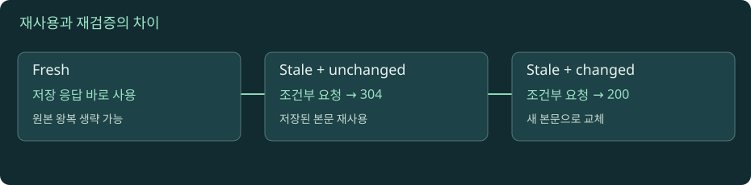

HTTP 캐시와 CDN: 저장과 재사용의 조건
캐시는 복사본을 보관하는 일과 그 복사본을 다시 써도 되는지 판단하는 일을 함께 수행한다.

fresh · 304 · 새 본문 비교
자바스크립트를 켜면 실험을 조작할 수 있습니다. 아래 본문·도식·실습은 그대로 읽을 수 있습니다.
01. 01 · 브라우저 캐시와 공유 캐시의 독자가 다르다
사용자 한 명의 브라우저 캐시는 개인 캐시다. 여러 사용자가 함께 쓰는 CDN이나 프록시 캐시는 공유 캐시다. '서버 앞에서 빨리 반환한다'는 점만 보면 비슷하지만, 사용자별 응답을 잘못 공유했을 때의 영향은 다르다. 주문 내역처럼 사용자 A에게만 보여야 하는 표현은 공용 이미지와 같은 정책을 쓰면 안 된다.
캐시가 저장하는 것은 보통 응답의 본문만이 아니다. 상태와 관련 헤더, 저장 시각 같은 정보가 재사용 판단에 참여한다. URL이 같더라도 요청 메서드와 Vary로 지정된 헤더 값 등 적합한 키가 맞아야 한다. '우리 CDN은 URL 문자열만 보고 캐시한다'는 제품 설정이 있다면 인증·언어·압축 변형과 어떤 관계인지 명시적으로 검토해야 한다.
교육용 쇼핑 서비스를 생각하자. /logo.svg는 모두에게 같지만 /me는 로그인 사용자마다 다르다. 두 경로를 동일한 캐시 규칙으로 묶으면 성능 최적화가 정보 노출로 바뀔 수 있다. 이 장의 목표는 캐시를 켜고 끄는 스위치를 외우는 것이 아니라 누가 저장하고 누구의 요청에 재사용하는가를 설명하는 것이다. 기본 모델은 MDN HTTP 캐싱 안내를 참고한다.
02. 02 · freshness는 원본이 바뀌지 않았다는 보장이 아니다
Cache-Control: max-age=60인 응답을 받았다고 하자. 캐시는 정해진 나이 계산에 따라 60초 미만의 응답을 fresh로 판단할 수 있다. 원본 DB의 내용이 그 사이 바뀌지 않았다는 뜻이 아니다. 원본이 변경되더라도 캐시가 매 순간 확인하지 않는 만큼 일정 시간의 차이를 허용하는 계약이다.
직접 만든 시간표를 보자. 10:00:00에 가격 100을 캐시했고 10:00:10에 원본 가격이 120으로 바뀌었다. max-age=60이면 다른 조건이 없을 때 10:00:30의 사용자가 100을 받을 수 있다. 캐시가 고장난 것이 아니라 허용된 재사용 시간 안에 있는 것이다. '최신 가격이어야 한다'는 업무 요구와 '60초 공유해도 된다'는 설정이 맞는지 판단해야 한다.
나이는 단순히 내 컴퓨터에 받은 뒤 지난 시간만이 아니다. 상류 캐시에서 이미 머문 시간, Date와 Age, 전송 지연 등을 고려한다. 장의 시뮬레이터는 이해를 위해 저장 후 경과 시간 중심으로 단순화하지만 실제 HTTP 캐시의 나이 계산은 RFC 9111의 규칙을 따른다. Age를 보면 어느 지점에서 얼마나 오래 보관됐는지의 단서를 얻지만 그것만으로 전체 경로를 복원할 수는 없다.
03. 03 · no-cache, no-store, private를 섞어 읽지 않기
no-cache는 저장을 무조건 금지하는 말이 아니다. 일반적인 무인자 응답 지시자는 재사용 전에 성공적인 검증을 요구한다. no-store는 캐시에 응답을 저장하지 말라는 지시다. private는 공유 캐시의 저장을 제한하고 개인 캐시에는 저장 가능성을 남긴다. 이름만 보고 no-cache를 '디스크에 남기지 말라'고 해석하면 정책이 어긋난다.
public은 공유 캐시에 대한 저장 허용 의도를 나타내지만 모든 응답이 모든 조건에서 무조건 저장·재사용된다는 뜻은 아니다. max-age는 일반 fresh 시간이고 s-maxage는 공유 캐시에 적용되는 시간이다. 예를 들어 public, max-age=30, s-maxage=300이면 브라우저와 공유 캐시의 재사용 조건이 달라진다. Cache-Control 지시자 설명에서 대상을 확인한다.
실무에서는 헤더의 단어 수보다 업무 의도를 먼저 적자. '이 정보는 특정 사용자 전용이며 저장도 원치 않는다'와 '공개 자산이라 1년 캐시 가능하다'는 다른 계약이다. no-store를 뒤늦게 보냈다고 이미 배포된 이전 복사본이 전 세계에서 자동 삭제되는 것은 아니다. 브라우저 기록·애플리케이션 저장소까지 모두 제어하는 개인정보 삭제 기능으로 확대 해석하지 않는다.
04. 04 · ETag와 304: 복사본의 유효성만 다시 확인하기
서버가 응답에 ETag: "catalog-v7"를 제공했다고 하자. 클라이언트는 저장한 본문과 태그를 함께 기억한다. 나중에 검증할 때 If-None-Match: "catalog-v7"를 보낸다. 서버가 해당 조건을 만족한다고 판단하면 GET·HEAD에 304를 반환해 기존 표현을 재사용하게 할 수 있다. 내용이 바뀌었다면 새 본문을 담은 200이 돌아올 수 있다.
304는 본문을 다시 보내지 않아 대역폭을 절약하지만 네트워크 왕복 자체를 없애지는 않는다. fresh 응답을 로컬에서 바로 쓰는 hit와 서버에 확인한 뒤 304로 재사용하는 validated hit를 구분하자. 네트워크가 느릴 때 본문이 작아도 검증 왕복 지연이 눈에 띌 수 있다. ETag 설명은 태그와 조건부 요청의 관계를 정리한다.
태그는 서버가 생성하는 불투명한 식별자라서 반드시 파일 해시나 수정 시각이라고 가정하지 않는다. weak 태그는 W/를 붙여 의미상 동등성에 관한 더 약한 검증을 표현한다. 클라이언트는 태그를 임의로 분석해 버전을 계산하기보다 원문 그대로 조건에 넣는다. 304가 왔는데 저장된 본문이 없다면 재사용할 표현도 없으므로 '304는 빈 성공 데이터'라는 애플리케이션 처리는 잘못이다.
05. 05 · Vary: 같은 URL의 다른 표현을 분리하기
서버가 요청의 Accept-Language에 따라 한국어와 영어를 제공한다면 URL만 같은 캐시 키는 불충분하다. Vary: Accept-Language는 해당 요청 헤더가 응답 선택에 영향을 주므로 캐시가 재사용할 때 그 차이를 고려하도록 알린다. Vary: Accept-Encoding은 압축 표현을 구분하는 대표 예다. 규칙은 Vary 문서에서 확인한다.
교육용 사례에서 A 사용자는 ko, B 사용자는 en을 요청한다. URL만으로 한 응답을 공유하면 B가 한국어 본문을 받을 수 있다. 그렇다고 모든 헤더를 키에 넣으면 조합 수가 폭발하고 hit 비율이 낮아진다. 어떤 입력이 실제 표현을 바꾸는지 명시적으로 찾아야 한다. 캐시 효율과 정확성 사이에서 무엇을 생략할 수 있는지는 업무 계약이 정한다.
CORS 응답에서 허용 Origin을 동적으로 반영한다면 Origin에 따른 차이도 검토해야 한다. 한 출처에 대해 만든 허용 헤더가 다른 출처에 재사용되면 정책과 관찰이 어긋난다. Vary는 접근 권한 검사 자체가 아니며, 인증 정보가 포함된 개인화 응답을 안전하게 공유하는 만능 기능도 아니다. 저장 가능 여부와 표현 선택 키를 별도 질문으로 유지하자.
06. 06 · CDN은 가장자리의 HTTP 처리 계층이다
CDN은 사용자 가까운 지점에서 공개 자산을 반환해 지연과 원본 부하를 줄일 수 있다. 원본 서버, CDN edge, 브라우저라는 세 계층이 있으면 브라우저 miss여도 edge hit일 수 있고 edge miss여도 다른 중간 계층이 응답할 수 있다. 따라서 '캐시 hit'라는 말에는 어느 캐시인지가 필요하다.
교육용 수치를 보자. 사용자와 edge의 왕복이 20ms, edge와 원본의 왕복이 150ms라고 가정한다. edge hit는 원본까지 가는 일을 피할 수 있다. 하지만 원본에서 데이터를 만드는 데 1초가 걸리는 응답을 무조건 공개 캐시하면 사용자별 데이터 오류가 생길 수 있다. 캐시 가능성은 성능보다 먼저 정확성 조건을 만족해야 한다. 여기의 숫자는 설명용이며 실제 서비스 측정값이 아니다.
원본에서 헤더를 고쳐도 CDN에 남은 이전 응답이 바로 없어지는 것은 아니다. 제품별 purge나 invalidation이 있더라도 대상 키와 전파 범위를 확인해야 한다. 장기 캐시 자산에는 app.8f32.js처럼 내용이 바뀔 때 URL도 바꾸는 버전 전략을 사용할 수 있다. HTML은 새 자산 URL을 가리켜야 하며 오래된 HTML을 사용하는 독자도 고려한다. URL 버전 전략과 짧은 HTML 정책은 서로 보완한다.
07. 07 · stale-while-revalidate와 stale-if-error의 비용
캐시가 stale이 됐을 때 항상 즉시 오류로 끝내야 하는 것은 아니다. 허용된 정책에 따라 이전 응답을 잠시 쓰면서 뒤에서 갱신하거나, 원본 오류 동안 오래된 응답을 사용할 수 있다. stale-while-revalidate와 stale-if-error는 이런 동작의 HTTP 확장이다. RFC 5861이 동작 범위를 정의한다.
자체 교육용 예시에서 날씨 배너는 수십 초 오래돼도 사용성이 좋을 수 있다. 반면 잔액이나 접근 권한 정보는 오래된 복사본이 업무 오류나 보안 문제를 만들 수 있다. 오래된 응답 허용은 무료 성능 개선이 아니라 신선도와 가용성의 교환이다. 사용할 데이터의 허용 오차와 장애 시 행동을 먼저 정해야 한다.
수천 사용자의 캐시가 같은 순간 만료되면 원본으로 갱신 요청이 몰릴 수 있다. 이를 줄이기 위해 요청 병합, 갱신 시간 분산, 선제 갱신 같은 기법을 검토할 수 있다. 다만 설명용 시뮬레이터에서 한 사용자의 상태가 바뀌는 것과 실제 분산 CDN의 동시성 제어는 범위가 다르다. 하나의 애니메이션이 모든 edge 노드의 구현을 재현한다고 주장하지 않는다.
08. 08 · 캐시 장애는 입력·저장·재사용·삭제를 나눠 추적한다
문제 신고가 '새 이미지가 안 보임'이라면 먼저 어떤 URL을 요청했는지 확인한다. 새로운 파일을 올렸는데 HTML이 예전 URL을 가리키는 것인지, 같은 URL의 이전 응답이 fresh인지, 서비스 워커나 애플리케이션 저장이 개입하는지 구분한다. 새로고침 한 번으로 해결됐다는 사실만으로 CDN이 원인이라고 확정하지 않는다.
응답의 Cache-Control·Age·ETag·Vary를 기록하고, 개발자 도구에서 memory cache·disk cache·네트워크 응답 표시를 본다. 공개 캐시 지시자와 실제 공급자 설정이 충돌할 수도 있다. 인증 헤더나 쿠키가 있으면 '캐시하지 않겠지'라고 추측하기보다 명시적인 개인화 정책과 제품별 키 설정을 검토한다.
상태를 네 칸으로 분리하자. 저장할 수 있는가? 지금 fresh인가? 조건부 검증 결과가 무엇인가? 폐기·갱신은 어느 범위에서 끝났는가? 이 질문에 답하면 no-store를 freshness 설정으로 착각하거나 purge 완료를 브라우저의 모든 복사본 삭제로 확대하는 오류를 줄일 수 있다. 캐시 성능 지표도 hit 비율만 보지 말고 stale 응답 비율, 원본 요청 수, 검증 지연, 잘못 공유된 응답 여부와 함께 해석한다.
실습 · 200과 304를 로컬에서 직접 관찰하기
교재 폴더에서 python3 tools/lab_server.py를 실행한다. 서버는 로컬 루프백에서만 실습한다. 다른 터미널을 열어 아래 명령을 실행하고 끝나면 서버 터미널에서 Ctrl+C로 종료한다.
curl -i http://127.0.0.1:8765/cache를 실행한다. 예제 서버의 200 응답, ETag"v1", Cache-Control을 읽고 본문을 기록한다.curl -i -H 'If-None-Match: "v1"' http://127.0.0.1:8765/cache를 실행한다. 304와 본문 부재를 확인한다. 이 응답은 클라이언트에게 원래 본문이 저장돼 있다는 가정 아래 의미가 있다.curl -i -H 'If-None-Match: "different"' http://127.0.0.1:8765/cache로 다른 태그를 보낸다. 조건이 일치하지 않아 200과 전체 본문이 오는지 비교한다.- 이 실습에서 curl은 일반 브라우저처럼 자동 응답 캐시를 제공하지 않는다. 두 번째 요청은 직접 조건 헤더를 넣어 검증 흐름을 관찰한 것이다. curl이 자체 저장한 본문을 자동 재사용했다고 해석하지 않는다.
- 시뮬레이터에서 max-age를 60초로 두고 경과 시간을 10초, 70초로 바꾼다. fresh 재사용과 stale 검증의 차이를 설명한다. no-cache를 선택했을 때 저장과 검증이 어떻게 달라지는지 비교한다.
- 교육용 /profile 응답에 사용자 이름이 들어 있다고 가정한다. 여러 사용자에게 공개 캐시하려는 설정의 문제를 적고 개인 캐시·공유 캐시의 허용 범위를 다시 설계한다. 실제 사용자 데이터는 사용하지 않는다.
- 마지막으로
URL / Cache-Control / Age / ETag / Vary / 실제 응답 주체형식의 기록을 만든다. 공개 사이트를 추가 관찰할 때는 이 값들이 서버 설정에 따라 달라짐을 표시한다.
로컬 실습 서버 실행과 공통 명령은 실습 안내에서 확인하세요. 실제 HTTPS·HTTP/2·HTTP/3 서버를 제공하는 실습은 아닙니다.
이해도 확인
선택 후 이유를 설명하고 정답을 확인하세요.
원전과 더 읽을 자료
표준과 공식 문서를 참고해 독립적으로 구성한 학습 설명입니다. 예시 결과와 시간은 명시한 경우를 제외하면 교육용입니다. 확인 기준: 2026-11-09.
진행률은 현재 브라우저에 저장됩니다. 파일 직접 열기와 HTTP 접속은 저장 공간이 다를 수 있습니다.